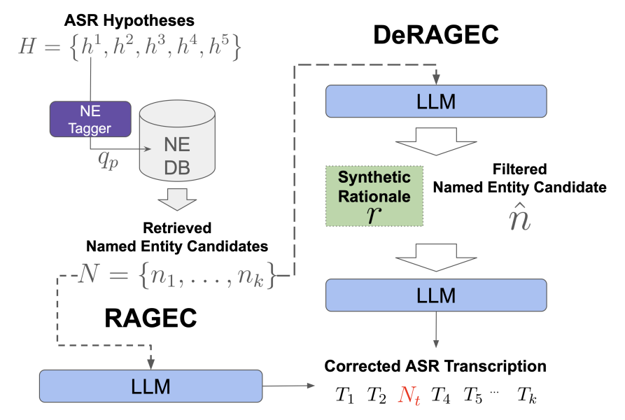
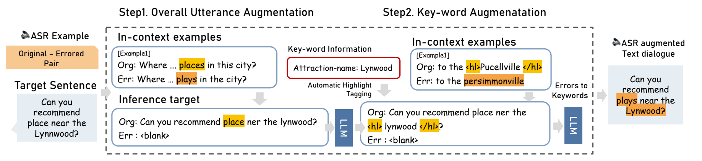
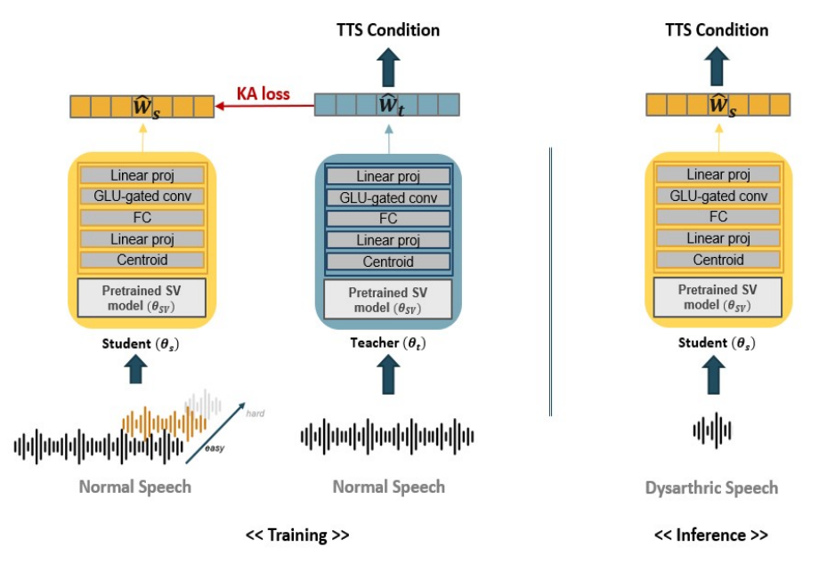
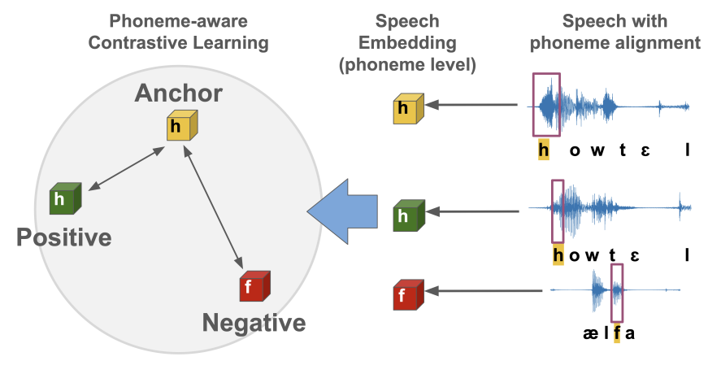
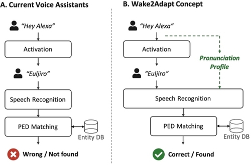

[Degree and field of study]
[University · Advisor, if applicable]
RESEARCH & PUBLICATIONS
My publications explore speech and language technologies, including automatic speech recognition error correction, robust dialogue state tracking, and speech recognition and synthesis for dysarthric speakers.
[Add your current position, affiliation, and a short research biography.]
* Equal contribution (co-first authors).

Figure 1 from the linked paper; cropped from PDF page 2. Original paper ↗

Figure 1 from the linked paper; cropped from PDF page 2. Original paper ↗

Figure 2 from the linked paper; cropped from PDF page 2. Original paper ↗

Figure 1 from the linked paper; cropped from PDF page 2. Original paper ↗

Figure 1, Yeonsu Kim, Solee Im, Jihyun Lee, Wonjun Lee (2026). CC BY 4.0; resized for display. Original paper ↗ · CC BY 4.0
[University · Advisor, if applicable]
[Organization · Brief description of your work]
[Awarding organization]
[Venue, course, or organization]
CURRICULUM VITAE
Education, research experience, and publications.